Last updated: 2015-06-16
Code version: a43ca3288509e4f90d216b0d2d36ed1db5770a6e
library("dplyr")
library("ggplot2")
theme_set(theme_bw(base_size = 16))
library("edgeR")Summary counts from featureCounts. Created with gather-summary-counts.py.
summary_counts <- read.table("../data/summary-counts.txt", header = TRUE,
stringsAsFactors = FALSE)
summary_per_sample <- summary_counts %>%
filter(sickle == "quality-trimmed") %>%
select(-sickle) %>%
arrange(individual, batch, well, rmdup) %>%
as.data.frameInput annotation.
anno <- read.table("../data/annotation.txt", header = TRUE,
stringsAsFactors = FALSE)
head(anno) individual batch well sample_id
1 19098 1 A01 NA19098.1.A01
2 19098 1 A02 NA19098.1.A02
3 19098 1 A03 NA19098.1.A03
4 19098 1 A04 NA19098.1.A04
5 19098 1 A05 NA19098.1.A05
6 19098 1 A06 NA19098.1.A06Input read counts.
reads <- read.table("../data/reads.txt", header = TRUE,
stringsAsFactors = FALSE)Input molecule counts.
molecules <- read.table("../data/molecules.txt", header = TRUE,
stringsAsFactors = FALSE)Input single cell observational quality control data.
qc <- read.table("../data/qc-ipsc.txt", header = TRUE,
stringsAsFactors = FALSE)
head(qc) individual batch well cell_number concentration tra1.60
1 19098 1 A01 1 1.734785 1
2 19098 1 A02 1 1.723038 1
3 19098 1 A03 1 1.512786 1
4 19098 1 A04 1 1.347492 1
5 19098 1 A05 1 2.313047 1
6 19098 1 A06 1 2.056803 1Input list of single cells to keep based on qc.
goodcell <- read.table("../data/quality-single-cells.txt", header = TRUE,
stringsAsFactors = FALSE)
head(goodcell) NA19098.1.A01
1 NA19098.1.A02
2 NA19098.1.A05
3 NA19098.1.A06
4 NA19098.1.A07
5 NA19098.1.A08
6 NA19098.1.A10#reads per sample
summary_per_sample_reads <- summary_per_sample %>% filter(rmdup == "reads")
#create unmapped ratios
summary_per_sample_reads$unmapped.ratios <- summary_per_sample_reads[,9]/apply(summary_per_sample_reads[,5:13],1,sum)
#create total mapped reads
summary_per_sample_reads$total.mapped <- apply(summary_per_sample_reads[,5:8],1,sum)
#creat ERCC ratios
summary_per_sample_reads$ERCC.ratios <- apply(reads[grep("ERCC", rownames(reads)), ],2,sum)/apply(summary_per_sample_reads[,5:8],1,sum)
#remove bulk keep single cell
summary_per_sample_reads_single <- summary_per_sample_reads[summary_per_sample_reads$well!="bulk",]
#add cell number per well by merging qc file
summary_per_sample_reads_single_qc <- merge(summary_per_sample_reads_single,qc,by=c("individual","batch","well"))
#qc filter
summary_per_sample_reads_single_qc$qc_filter <- summary_per_sample_reads_single_qc$cell_number == 1 & summary_per_sample_reads_single_qc$total.mapped > 2 * 10^6
sum(summary_per_sample_reads_single_qc$qc_filter)[1] 632ggplot(summary_per_sample_reads_single_qc, aes(x = total.mapped , y = unmapped.ratios, col = qc_filter)) + geom_text(aes(label = cell_number))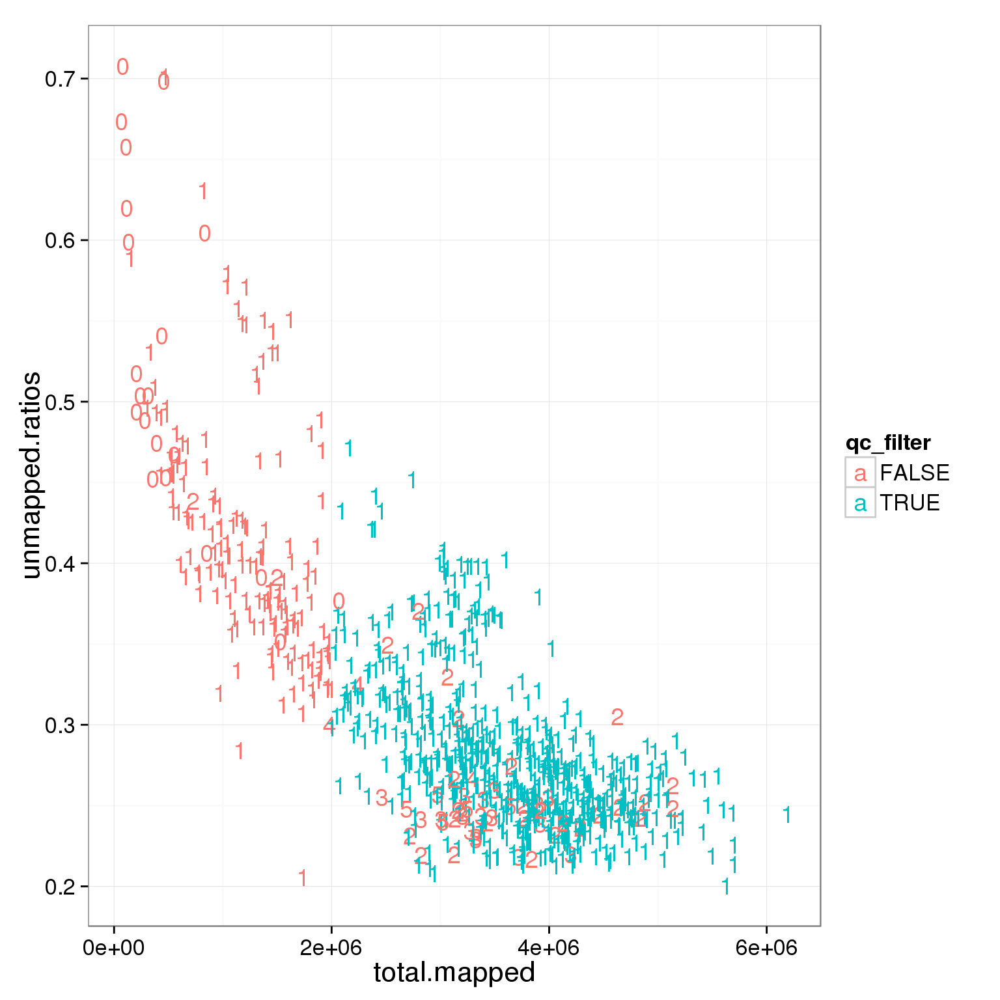
ggplot(summary_per_sample_reads_single_qc, aes(x = total.mapped , y = ERCC.ratios, col = qc_filter)) + geom_text(aes(label = cell_number))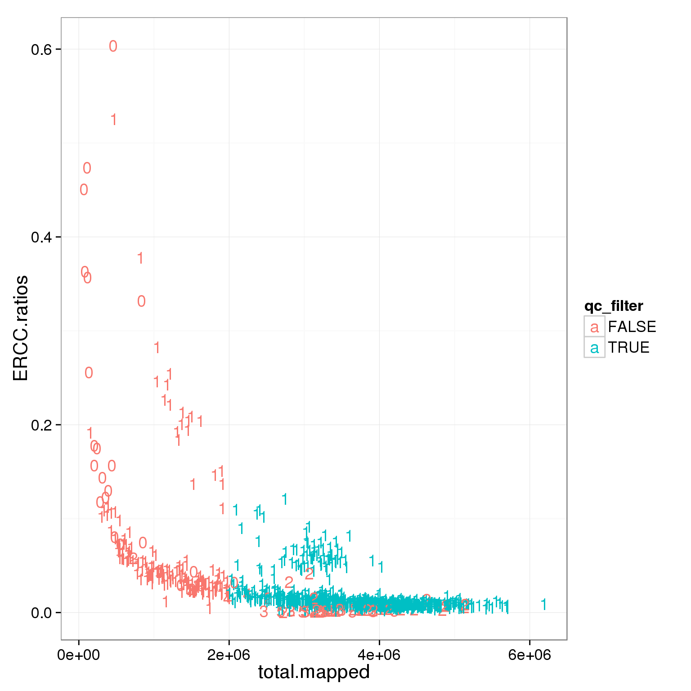
# molecules per sample
summary_per_sample_molecules <- summary_per_sample %>% filter(rmdup == "molecules")
# total ERCC molecule
summary_per_sample_molecules$total.ERCC.mol <- apply(molecules[grep("ERCC", rownames(reads)), ],2,sum)
# ERCC molecule ratio
summary_per_sample_molecules$ERCC.ratio.mol <- summary_per_sample_molecules$total.ERCC.mol/summary_per_sample_molecules$Assigned
# remove bulk keep single cell
summary_per_sample_molecules_single <- summary_per_sample_molecules[summary_per_sample_molecules$well!="bulk",]
plot(summary_per_sample_molecules_single$total.ERCC.mol)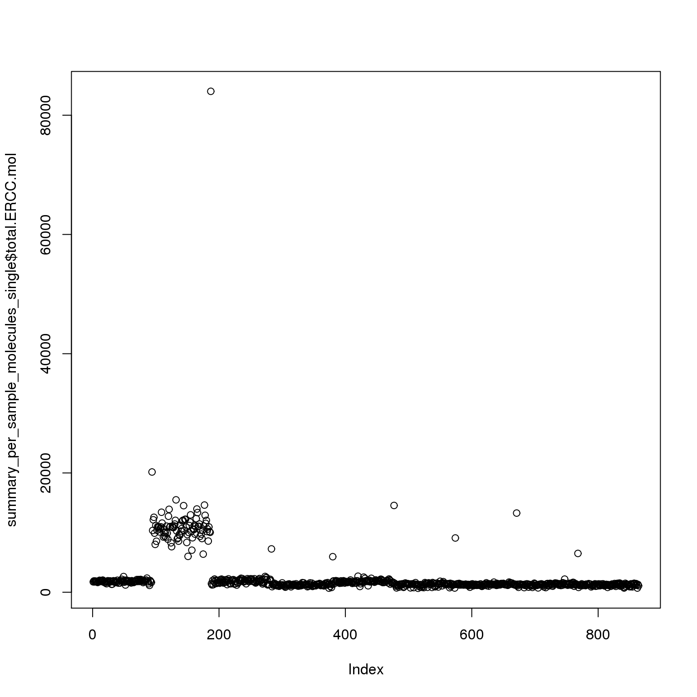
# adjust total ERCC molecules of 19098 batch2
summary_per_sample_molecules_single$index_19098_2 <- (summary_per_sample_molecules_single$individual == "19098" & summary_per_sample_molecules_single$batch == "2")
# calculating the ratio of 19098 batch 2 to the rest
adjusted_ratio.mol <- mean(summary_per_sample_molecules_single$total.ERCC.mol[summary_per_sample_molecules_single$index_19098_2])/mean(summary_per_sample_molecules_single$total.ERCC[!summary_per_sample_molecules_single$index_19098_2])
adjusted_ratio.mol [1] 7.287311# adjusted total ERCC reads
summary_per_sample_molecules_single$adj.total.ERCC.mol <- summary_per_sample_molecules_single$total.ERCC.mol
summary_per_sample_molecules_single$adj.total.ERCC.mol[summary_per_sample_molecules_single$index_19098_2] <- summary_per_sample_molecules_single$adj.total.ERCC.mol[summary_per_sample_molecules_single$index_19098_2]/adjusted_ratio.mol
# adjusted ERCC ratios
summary_per_sample_molecules_single$adj.ERCC.ratios.mol <-
summary_per_sample_molecules_single$adj.total.ERCC.mol/summary_per_sample_molecules_single$Assigned
# add qc filter and cell number
summary_per_sample_molecules_single$qc_filter <- summary_per_sample_reads_single_qc$qc_filter
summary_per_sample_molecules_single$cell_number <- summary_per_sample_reads_single_qc$cell_number
ggplot(summary_per_sample_molecules_single, aes(x = Assigned, y = ERCC.ratio.mol, col = qc_filter)) + geom_text(aes(label = cell_number)) + facet_grid(individual ~ batch) + theme(axis.text.x = element_text(angle = 90, hjust = 0.9, vjust = 0.5))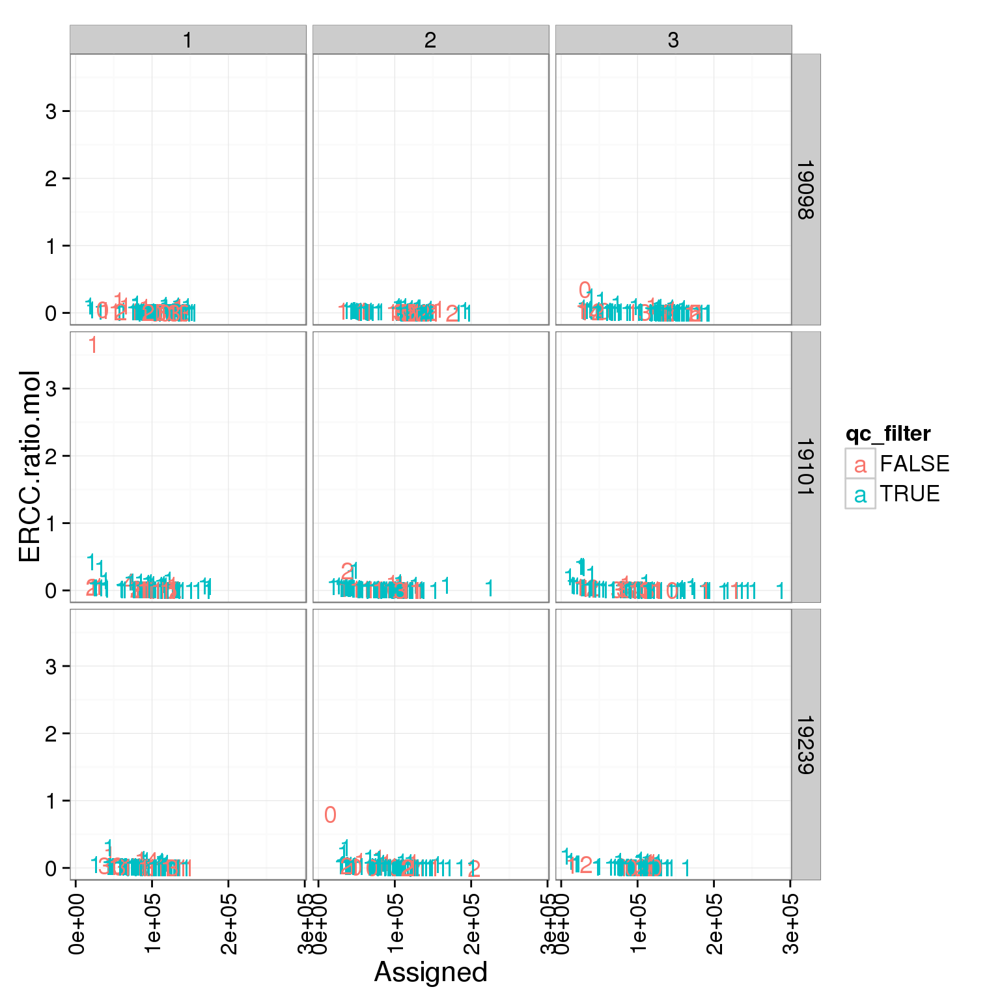
ggplot(summary_per_sample_molecules_single, aes(x = Assigned, y = adj.ERCC.ratios.mol, col = qc_filter)) + geom_text(aes(label = cell_number)) + facet_grid(individual ~ batch) + theme(axis.text.x = element_text(angle = 90, hjust = 0.9, vjust = 0.5))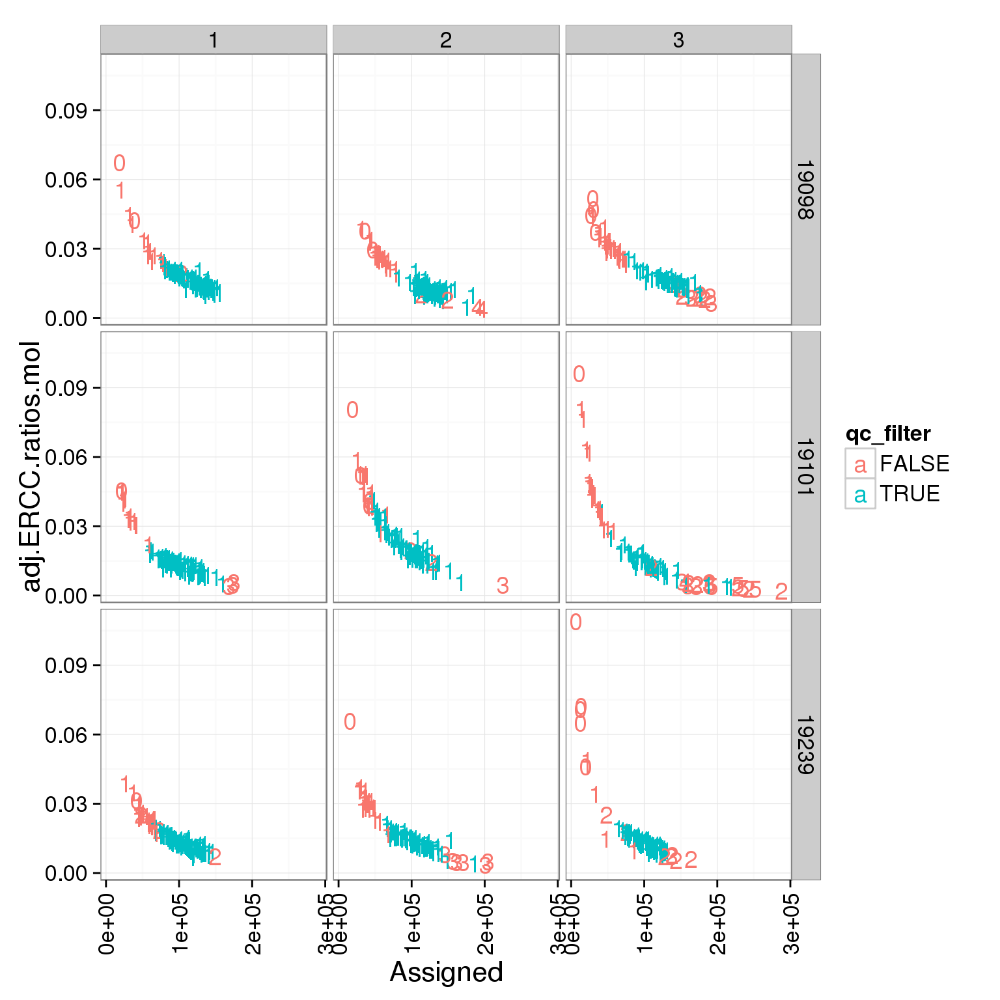
# remove molecules that are larger than 1024
rownames(molecules)[rowMeans(molecules) > 1024][1] "ENSG00000198712" "ENSG00000198938"molecules.new <- molecules [rowMeans(molecules) < 1024,]
dim(molecules)[1] 20419 873dim(molecules.new)[1] 20417 873# remove bulk
molecules_single <- molecules %>% select(-contains("bulk"))
# remove 1024 and greater
molecules_single <- molecules_single[apply(molecules_single,1,max) < 1024,]
# apply qc_filter
molecules_single_qc <- molecules_single[,summary_per_sample_reads_single_qc$qc_filter]
dim(molecules_single_qc)[1] 20396 632sample_name <- names(molecules_single_qc)
### create a function to compute the cv and mean of molecules
### input data is molecules_single_qc
### two parameters
### 1. filter: sellect for specifc individaul or batch
### 2. adj.19098.batch: flag to control if we want to adj the 19098 batch2 molecules numberes. default to not adj, meaning using the raw numbers
prep_molecules.cv.mean <- function(filter,adj.19098.batch2=0){
### generate the data of interest
data.in <- molecules_single_qc[,grepl(filter,sample_name)]
if(adj.19098.batch2 == 1){
#### find out which columns belong 19098 batch2
target.column <- sample_name[grep("19098.2",sample_name)]
#### find out ERCC rows
g <- rownames(data.in)
target.row <- g[grep("ERCC",g)]
#### replace the molecules numbers via dividing by adjusted_ratio.mol
data.in[target.row,target.column] <- (data.in[target.row,target.column])/adjusted_ratio.mol
}
if(adj.19098.batch2 == 2){
#### find out which columns belong 19098 batch2
#### remove 19098.2
data.in<- data.in[,!grepl("19098.2",sample_name)]
#### also need to take care of summary_per_sample_reads_single_qc
summary_per_sample_reads_single_qc <- summary_per_sample_reads_single_qc[!((summary_per_sample_reads_single_qc$individual==19098)&(summary_per_sample_reads_single_qc$batch==2)),]
}
if(adj.19098.batch2 == 3){
#### find out which columns belong 19098 batch2
target.column <- sample_name[grep("19098.2",sample_name)]
#### find out ERCC rows
g <- rownames(data.in)
target.row <- g[grep("ERCC",g)]
#### replace the molecules numbers via dividing by NA
data.in[target.row,target.column] <- NA
}
#correct for collision probability
molecules.crt <- -1024*log(1-data.in/1024)
# create a new dataset
molecules_single_qc_w_mean_cv <- molecules.crt
# add mean
molecules_single_qc_w_mean_cv$mean <- apply(molecules.crt, 1, function(x) mean(x,na.rm=TRUE) )
# add CV
molecules_single_qc_w_mean_cv$CV <- apply(molecules.crt, 1, function(x) sd(x,na.rm=TRUE) )/ apply(molecules.crt, 1, function(x) mean(x,na.rm=TRUE))
# add variance
molecules_single_qc_w_mean_cv$var <- apply(molecules.crt, 1, function(x) var(x,na.rm=TRUE) )
# remove non-expressed
molecules_single_qc_expressed <- molecules_single_qc_w_mean_cv[molecules_single_qc_w_mean_cv$mean >0,]
dim(molecules_single_qc_expressed)
# create a flag to ERCC
molecules_single_qc_expressed$ERCC <- grepl("ERCC",rownames(molecules_single_qc_expressed))
# add gene_name
molecules_single_qc_expressed$gene_name <- rownames(molecules_single_qc_expressed)
return(molecules_single_qc_expressed)
### end of prep.molecules.cv.mean function
}
molecules_single_qc_expressed <- prep_molecules.cv.mean(filter="19",adj.19098.batch2=0)
molecules_single_qc_expressed_adj <- prep_molecules.cv.mean(filter="19",adj.19098.batch2=1)
molecules_single_qc_expressed_rm <- prep_molecules.cv.mean(filter="19",adj.19098.batch2=2)
molecules_single_qc_expressed_rm_ERCC <- prep_molecules.cv.mean(filter="19",adj.19098.batch2=3)
# plot with color-blind-friendly palettes
cbPalette <- c("#999999", "#0000FF", "#56B4E9", "#009E73", "#F0E442", "#0072B2", "#D55E00", "#CC79A7")
ggplot(molecules_single_qc_expressed, aes(x = mean, y = CV, col = ERCC)) + geom_point(size = 2, alpha = 0.5) + scale_x_log10() + scale_colour_manual(values=cbPalette)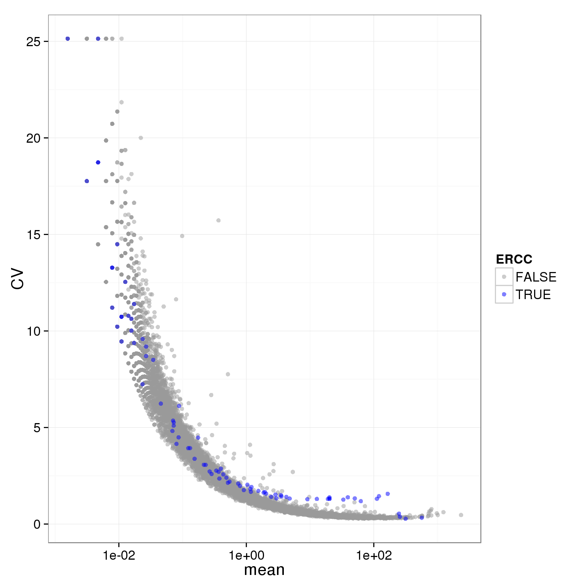
ggplot(molecules_single_qc_expressed_rm_ERCC, aes(x = mean, y = CV, col = ERCC)) + geom_point(size = 2, alpha = 0.5) + scale_x_log10() + scale_colour_manual(values=cbPalette)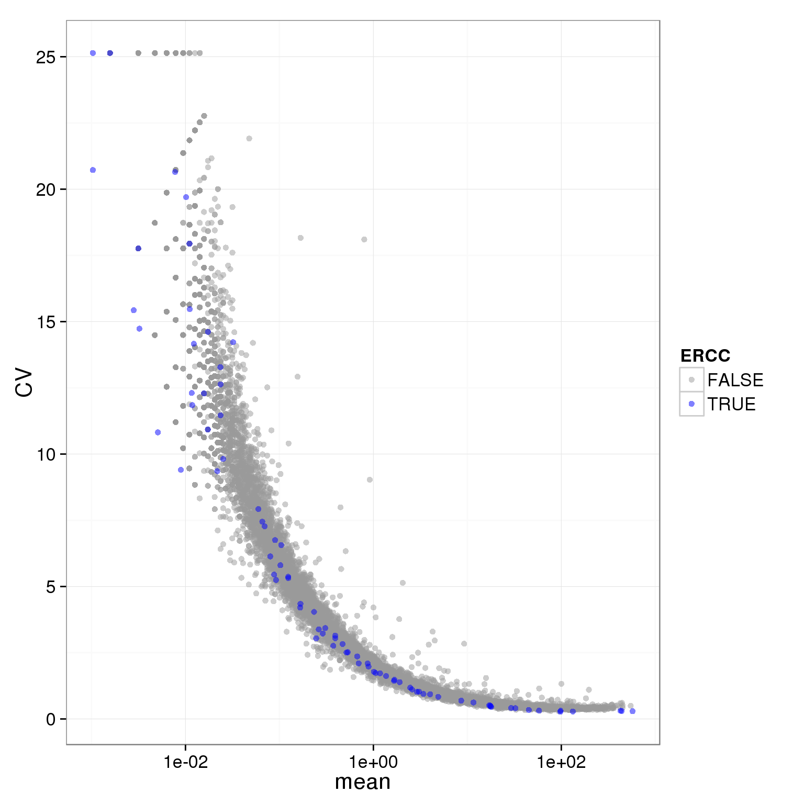
### create molecule data by each individaul using the molecules_single_qc_expressed_rm_ERCC
## 19098
individual_19098_mean_CV <- prep_molecules.cv.mean(filter="19098",adj.19098.batch2 = 0)
ggplot(individual_19098_mean_CV, aes(x = mean, y = CV, col = ERCC)) + geom_point(size = 2, alpha = 0.5) + scale_x_log10() + scale_colour_manual(values=cbPalette)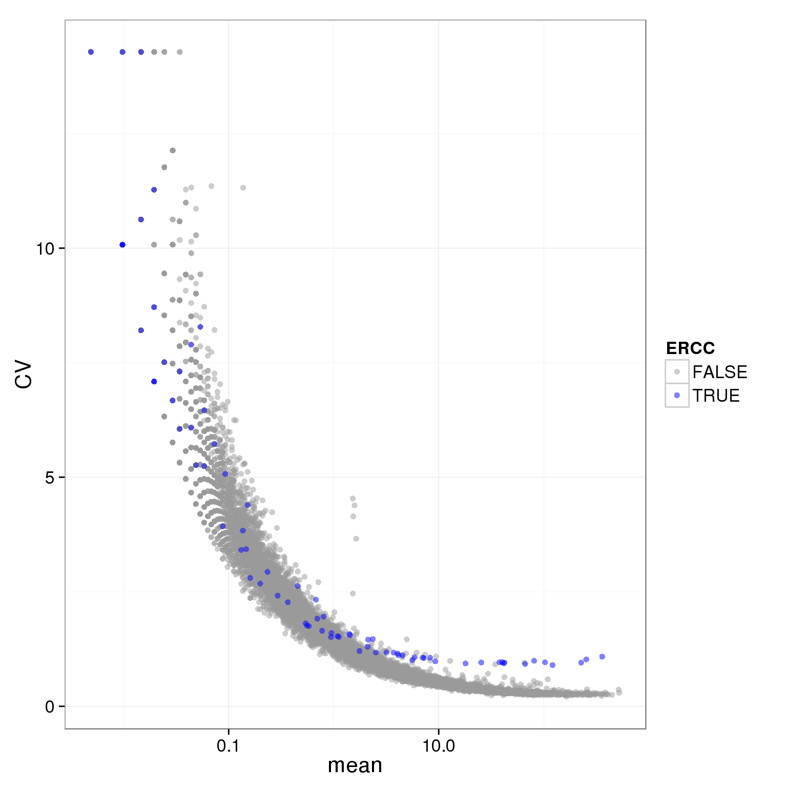
# 19098 by batch
individual_19098.1_mean_CV <- prep_molecules.cv.mean(filter="19098.1",adj.19098.batch2 = 0)
individual_19098.2_mean_CV <- prep_molecules.cv.mean(filter="19098.2",adj.19098.batch2 = 1)
individual_19098.3_mean_CV <- prep_molecules.cv.mean(filter="19098.3",adj.19098.batch2 = 0)
## 19101
individual_19101_mean_CV <- prep_molecules.cv.mean(filter="19101",adj.19098.batch2 = 0)
ggplot(individual_19101_mean_CV, aes(x = mean, y = CV, col = ERCC)) + geom_point(size = 2, alpha = 0.5) + scale_x_log10() + scale_colour_manual(values=cbPalette)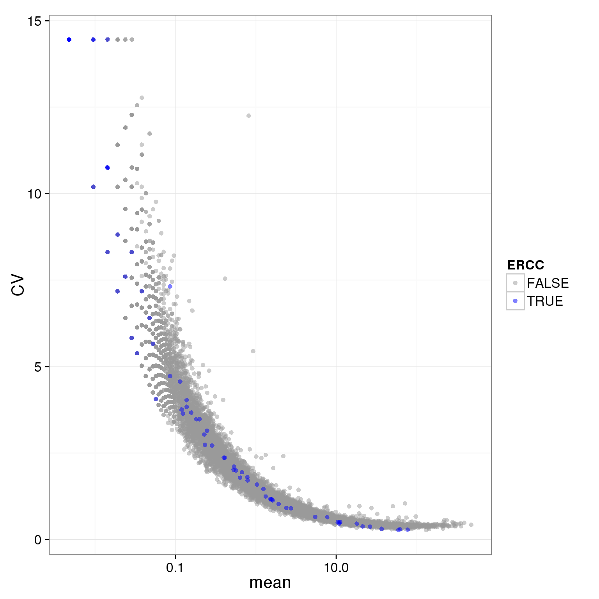
# 19101 by batch
individual_19101.1_mean_CV <- prep_molecules.cv.mean(filter="19101.1",adj.19098.batch2 = 0)
individual_19101.2_mean_CV <- prep_molecules.cv.mean(filter="19101.2",adj.19098.batch2 = 0)
individual_19101.3_mean_CV <- prep_molecules.cv.mean(filter="19101.3",adj.19098.batch2 = 0)
## 19239
individual_19239_mean_CV <- prep_molecules.cv.mean(filter="19239",adj.19098.batch2 = 0)
ggplot(individual_19239_mean_CV, aes(x = mean, y = CV, col = ERCC)) + geom_point(size = 2, alpha = 0.5) + scale_x_log10() + scale_colour_manual(values=cbPalette)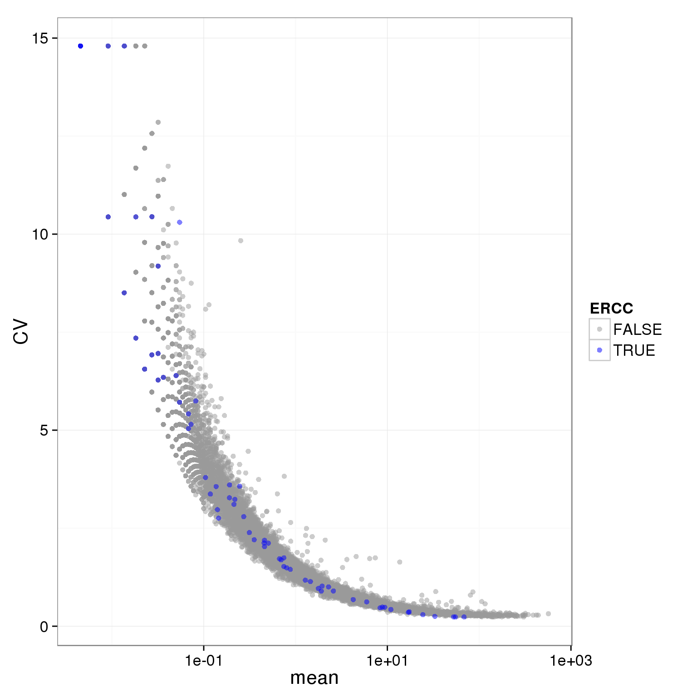
# 19239 by batch
individual_19239.1_mean_CV <- prep_molecules.cv.mean(filter="19239.1",adj.19098.batch2 = 0)
individual_19239.2_mean_CV <- prep_molecules.cv.mean(filter="19239.2",adj.19098.batch2 = 0)
individual_19239.3_mean_CV <- prep_molecules.cv.mean(filter="19239.3",adj.19098.batch2 = 0)# remove bulk
reads_single <- reads %>% select(-contains("bulk"))
# apply qc_filter
reads_single_qc <- reads_single[,summary_per_sample_reads_single_qc$qc_filter]
dim(reads_single_qc)[1] 20419 632sum(summary_per_sample_reads_single_qc$qc_filter)[1] 632# normalization
reads_single_qc_cpm <- cpm(reads_single_qc)
# create a new dataset
reads_single_qc_w_mean_cv <- data.frame(reads_single_qc_cpm)
sum(reads_single_qc_cpm!=reads_single_qc_w_mean_cv)[1] 0# add mean
reads_single_qc_w_mean_cv$mean <- apply(reads_single_qc_cpm, 1, mean)
# add CV
reads_single_qc_w_mean_cv$CV <- apply(reads_single_qc_cpm, 1, sd)/ apply(reads_single_qc_cpm, 1, mean)
# remove non-expressed
reads_single_qc_expressed <- reads_single_qc_w_mean_cv[reads_single_qc_w_mean_cv$mean >0,]
dim(reads_single_qc_expressed)[1] 17609 634# sellect ERCC
reads_single_qc_expressed$ERCC <- grepl("ERCC",rownames(reads_single_qc_expressed))
# plot with color-blind-friendly palettes
cbPalette <- c("#999999", "#0000FF", "#56B4E9", "#009E73", "#F0E442", "#0072B2", "#D55E00", "#CC79A7")
ggplot(reads_single_qc_expressed, aes(x = mean, y = CV, col = ERCC)) + geom_point(size = 2, alpha = 0.5) + scale_x_log10() + scale_colour_manual(values=cbPalette)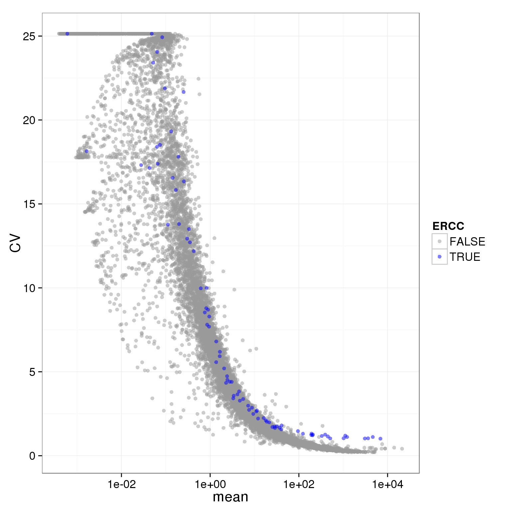
### this function will plot the mean vs cv based on the ERCC molecules counts
### only need to specify the input dataset
### the inpute dataset needs to have mean, cv and ERCC flag
### make minipar global
plot.cv.and.mean <- function(data.in){
# model based on ERCC only
# need to have a ERCC flag on the data.in
molecules_single_qc_expressed_ERCC <- data.in[data.in$ERCC,]
# defnine poisson function on a log x scale
poisson.c <- function (x) {
(10^x)^(0.5)/(10^x)
}
# compute the lossy factor based on ERCC
#### use LS: first define the function of f, then find the minimum
#### dont use the points from ERCC.mol.mean < 0.1 to fit.
ERCC.mol.mean <- molecules_single_qc_expressed_ERCC$mean
ERCC.mol.CV <- molecules_single_qc_expressed_ERCC$CV
# compute the sum of square errors
target.fun <- function(f){
sum((ERCC.mol.CV[ERCC.mol.mean>0.1]- sqrt(1/(f*ERCC.mol.mean[ERCC.mol.mean>0.1])))^2)
}
# find out the minimum
ans <- nlminb(0.05,target.fun,lower=0.0000001,upper=1)
minipar <- ans$par
# use the minimum to create the lossy poisson
lossy.posson <- function (x) {
1/sqrt((10^x)*minipar)
}
# 4 s.d.
four.sd <- function (x) {
4*(10^x)^(0.5)/(10^x)
}
# 3.7 sd + 0.3
three.sd <- function (x) {
3.7*(10^x)^(0.5)/(10^(x))+0.3
}
ggplot(data.in, aes(x = mean, y = CV, col = ERCC)) + geom_point(size = 2, alpha = 0.5) + stat_function(fun= poisson.c, col= "#CC79A7") + stat_function(fun= four.sd, col= "#F0E442") + stat_function(fun= lossy.posson, col= "#56B4E9") + scale_x_log10() + ylim(0, max(data.in$CV)*1.1) + scale_colour_manual(values=cbPalette) + xlab("Average number of molecules") + ylab ("coefficient of variation (CV)")
}
plot.cv.and.mean(data.in=molecules_single_qc_expressed)Warning in loop_apply(n, do.ply): Removed 21 rows containing missing values
(geom_path).Warning in loop_apply(n, do.ply): Removed 7 rows containing missing values
(geom_path).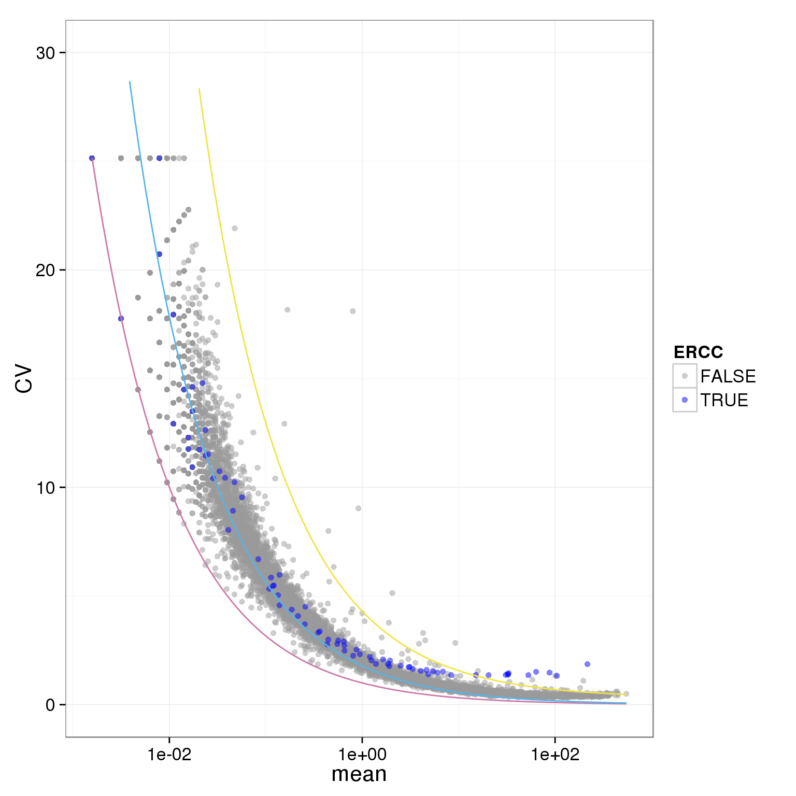
plot.cv.and.mean(data.in=molecules_single_qc_expressed_adj)Warning in loop_apply(n, do.ply): Removed 6 rows containing missing values
(geom_path).Warning in loop_apply(n, do.ply): Removed 26 rows containing missing values
(geom_path).Warning in loop_apply(n, do.ply): Removed 10 rows containing missing values
(geom_path).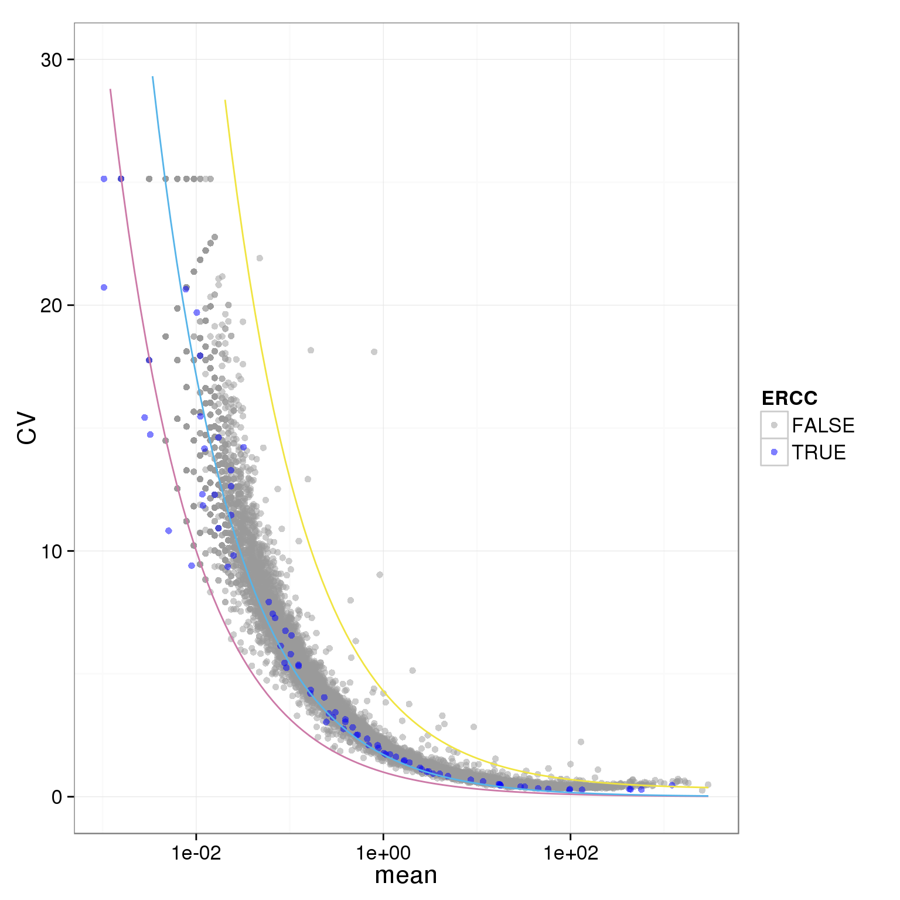
plot.cv.and.mean(data.in=molecules_single_qc_expressed_rm)Warning in loop_apply(n, do.ply): Removed 21 rows containing missing values
(geom_path).Warning in loop_apply(n, do.ply): Removed 4 rows containing missing values
(geom_path).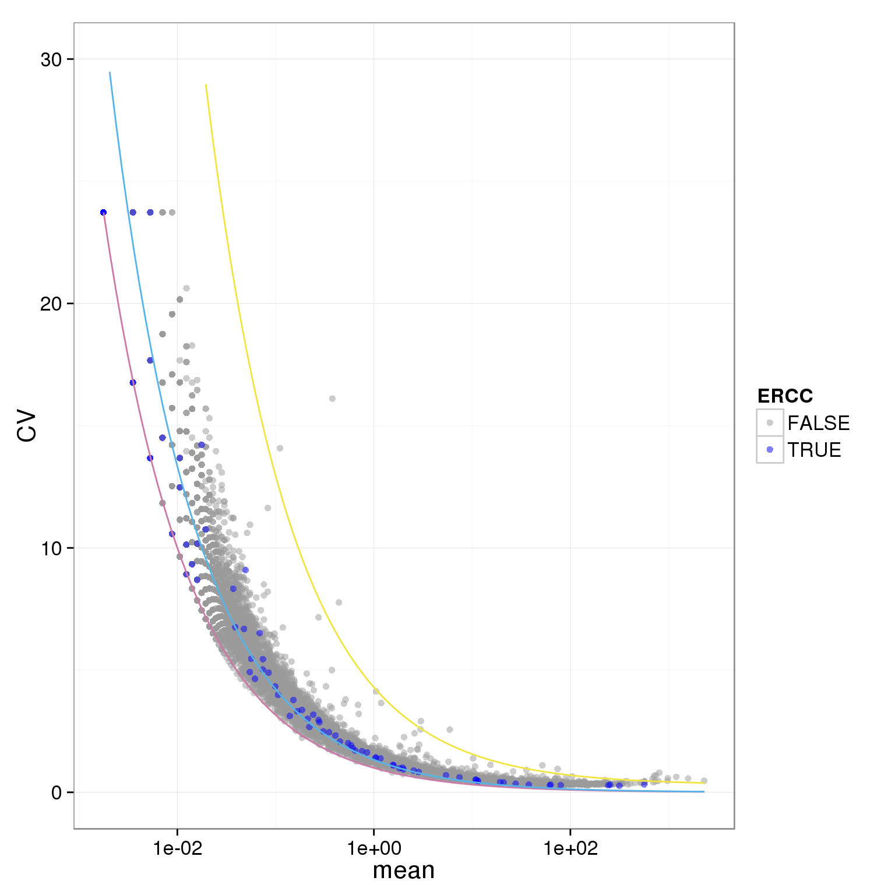
plot.cv.and.mean(data.in=molecules_single_qc_expressed_rm_ERCC)Warning in loop_apply(n, do.ply): Removed 21 rows containing missing values
(geom_path).Warning in loop_apply(n, do.ply): Removed 4 rows containing missing values
(geom_path).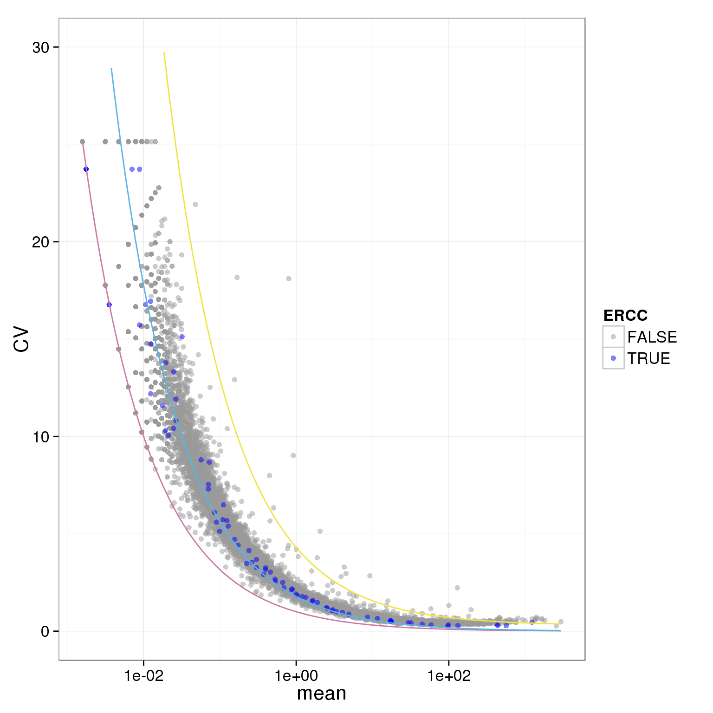
plot.cv.and.mean(data.in=individual_19098_mean_CV)Warning in loop_apply(n, do.ply): Removed 23 rows containing missing values
(geom_path).Warning in loop_apply(n, do.ply): Removed 6 rows containing missing values
(geom_path).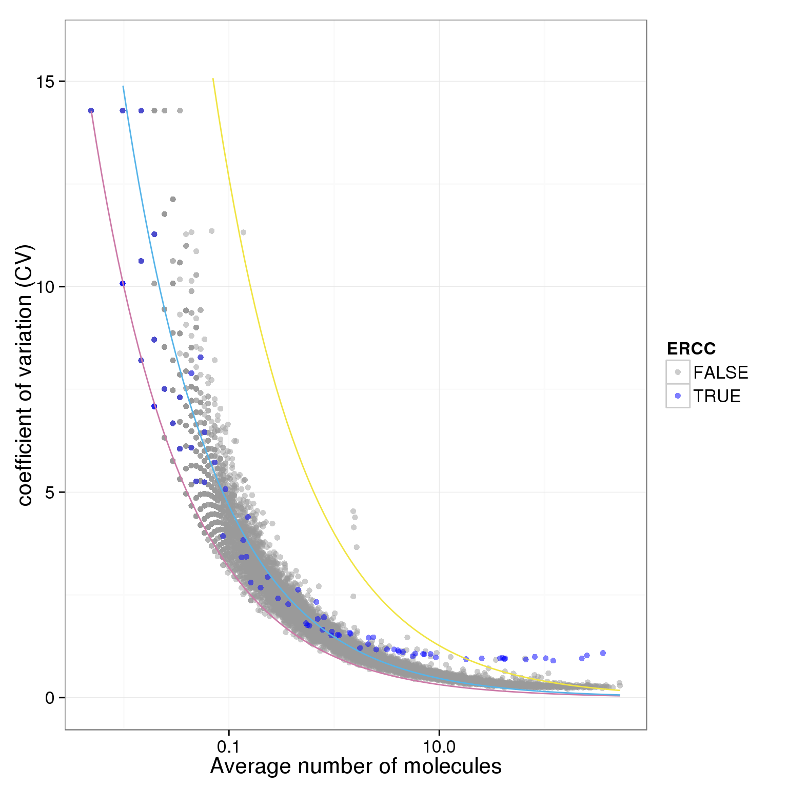
plot.cv.and.mean(data.in=individual_19101_mean_CV)Warning in loop_apply(n, do.ply): Removed 23 rows containing missing values
(geom_path).Warning in loop_apply(n, do.ply): Removed 5 rows containing missing values
(geom_path).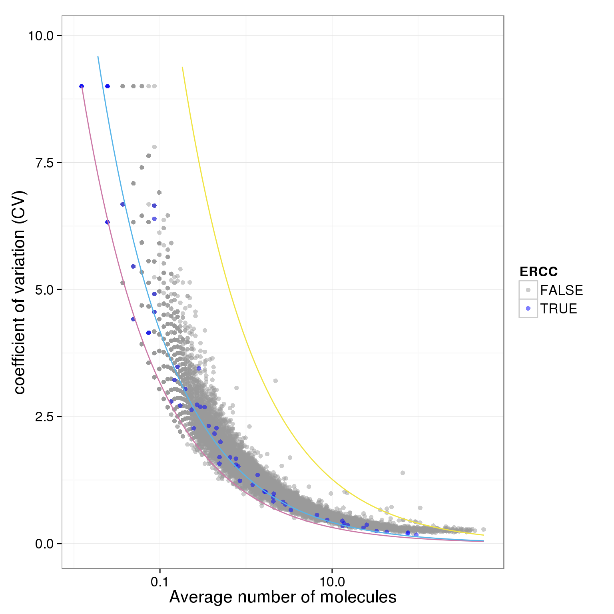
plot.cv.and.mean(data.in=individual_19239_mean_CV)Warning in loop_apply(n, do.ply): Removed 22 rows containing missing values
(geom_path).Warning in loop_apply(n, do.ply): Removed 4 rows containing missing values
(geom_path).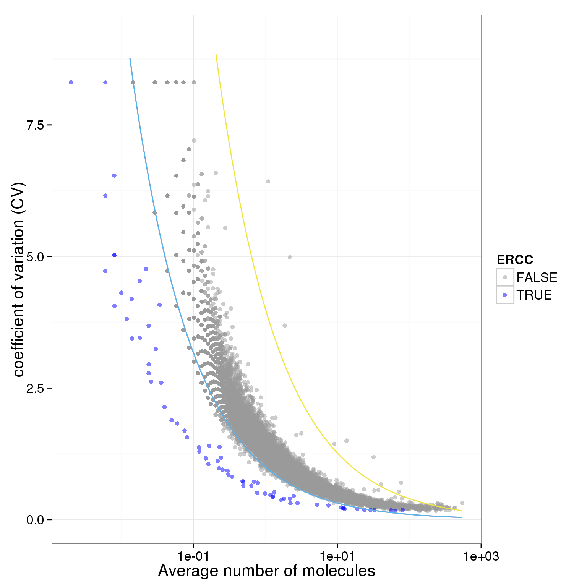
### ignore the following code
ignore <- function(xxx){
# log plot
plot(log(molecules_single_qc_expressed$mean,base=2),log(molecules_single_qc_expressed$CV,base=2), col= "#999999", xlab="log2 Average number of molecules",ylab= "log2 coefficient of variation",ylim=c(-2,5),xlim=c(-10,10),pch=20)
points(log(molecules_single_qc_expressed_ERCC$mean,base=2),log(molecules_single_qc_expressed_ERCC$CV,base=2),col= "#0000FF" ,pch=20)
# add lossy poison
curve(-0.5*x-0.5*log(minipar,base=2),-100,6,add=TRUE,col="#56B4E9")
# add poisson
curve(-0.5*x,add=TRUE,col= "#CC79A7")
}### this function will identify the noisy gene based on 3.7 sd
### only need to specify the input dataset
### the inpute dataset needs to have mean and CV
noisy_gene <- function(data.in){
# larger than 4 sd
count.index <- (!is.na(data.in$mean))&(data.in$mean>1)
condi.index <- (data.in$CV > 4*(data.in$mean^(0.5))/data.in$mean)
sum(count.index&condi.index)
rownames(molecules_single_qc_expressed)[count.index&condi.index]
}
# noisy genes of all
noisy_gene_all <- noisy_gene(data.in=molecules_single_qc_expressed)
# noisy genes of each individaul
noisy_gene_19098 <- noisy_gene(data.in = individual_19098_mean_CV)
noisy_gene_19101 <- noisy_gene(data.in = individual_19101_mean_CV)
noisy_gene_19239 <- noisy_gene(data.in = individual_19239_mean_CV)# overall variation is the sum of inter- and intra- individual variation
# creat a table with all the variation
table_variance <- molecules_single_qc_expressed[,c("gene_name","mean","var","ERCC")]
names(table_variance) <- c("gene_name","mean_all","variance_all","ERCC")
merge_variance <- function(data.base,data.merge,post.name){
data.merge <- data.merge[,c("gene_name","mean","var")]
names(data.merge) <- c("gene_name",paste(c("mean","var"),post.name,sep=""))
merge(data.base,data.merge,by="gene_name",all.x=TRUE)
}
table_variance <- merge_variance(data.base=table_variance,data.merge=individual_19098_mean_CV,post.name="_19098")
table_variance <- merge_variance(data.base=table_variance,data.merge=individual_19101_mean_CV,post.name="_19101")
table_variance <- merge_variance(data.base=table_variance,data.merge=individual_19239_mean_CV,post.name="_19239")
# keep non-missing across the table
table_variance <- table_variance[apply(table_variance,1,function(x) sum(is.na(x)))==0,]
# number of cell
number.of.cell.all <- sum(grepl("19",sample_name))
number.of.cell.19098 <- sum(grepl("19098",sample_name))
number.of.cell.19101 <- sum(grepl("19101",sample_name))
number.of.cell.19239 <- sum(grepl("19239",sample_name))
# compute inter individual variance
table_variance$between_indi_var <- (table_variance$variance_all*(number.of.cell.all -1) -
table_variance$var_19098 *(number.of.cell.19098 -1) -
table_variance$var_19101 *(number.of.cell.19101 -1) -
table_variance$var_19239 *(number.of.cell.19239 -1) ) /
(number.of.cell.all -1)
# plot overall variance vs inter-individaul variance
plot(table_variance$variance_all,table_variance$between_indi_var)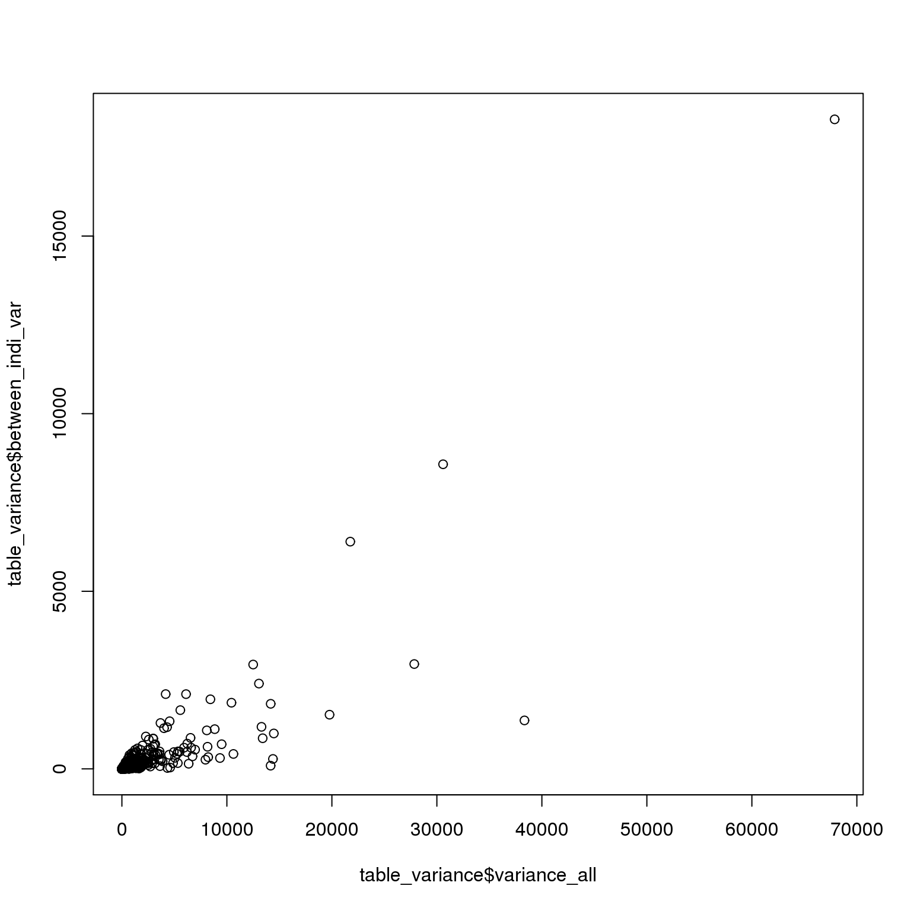
# plot ratio of inter-individual variance
plot(table_variance$between_indi_var/table_variance$variance_all)
abline(h=0.5,col=2)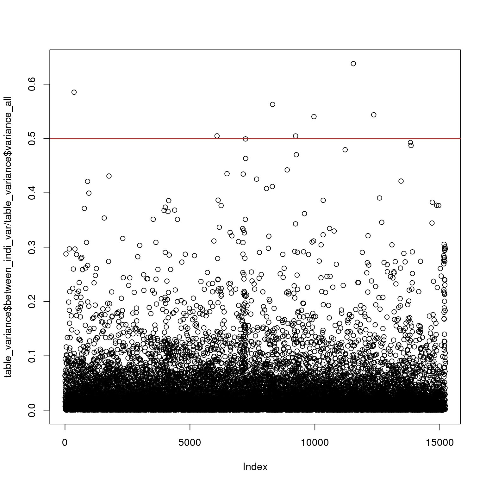
# identify genes that are noisy across all cells and also with a certain level of inter-individual variance
whatever_list <- table_variance[(table_variance$between_indi_var/table_variance$variance_all) > 0.35,][,1]
whatever_list[whatever_list %in% noisy_gene_all][1] "ENSG00000069275" "ENSG00000088305" "ENSG00000112306" "ENSG00000117724"
[5] "ENSG00000163041" "ENSG00000166426" "ENSG00000185088" "ENSG00000256618"# re create table
group_list <- c("19","19098","19101","19239","19098.1","19098.2","19098.3","19101.1","19101.2","19101.3","19239.1","19239.2","19239.3")
create_info_table <- function(statistics="mean"){
# first correct
molecules.crt <- -1024*log(1-molecules_single_qc/1024)
# loop all possible combinations
big_table <- do.call(cbind,lapply(group_list,function(x){
# subset data
data_ref <- molecules.crt[grep(x,names(molecules.crt))]
if(statistics=="mean"){
ans <- apply(data_ref,1,function(xx) mean(xx,na.rm=TRUE))
}
if(statistics=="var"){
ans <- apply(data_ref,1,function(xx) var(xx,na.rm=TRUE))
}
if(statistics=="CV"){
ans <- apply(data_ref,1,function(xx) sd(xx,na.rm=TRUE)) / apply(data_ref,1,function(xx) mean(xx,na.rm=TRUE))
}
ans
})
)
big_table <- data.frame(big_table)
names(big_table) <- paste(statistics,group_list,sep="_")
big_table$gene_name <- rownames(molecules_single_qc)
big_table
}
# create big table for mean, var and cv
table_mean <- create_info_table(statistics="mean")
table_var <- create_info_table(statistics="var")
table_cv <- create_info_table(statistics="CV")
# replace 0 as NA
table_mean[table_mean==0] <- NA
table_var[table_mean==0] <- NA
table_cv[table_mean==0] <- NA
# calculate the correlation
cor(table_mean[,2:13],use="pairwise.complete.obs") mean_19098 mean_19101 mean_19239 mean_19098.1 mean_19098.2
mean_19098 1.0000000 0.9839797 0.9773575 0.9871971 0.9614158
mean_19101 0.9839797 1.0000000 0.9893402 0.9858694 0.9142195
mean_19239 0.9773575 0.9893402 1.0000000 0.9816673 0.9037504
mean_19098.1 0.9871971 0.9858694 0.9816673 1.0000000 0.9086919
mean_19098.2 0.9614158 0.9142195 0.9037504 0.9086919 1.0000000
mean_19098.3 0.9878344 0.9892384 0.9841899 0.9873431 0.9146105
mean_19101.1 0.9805656 0.9966921 0.9874818 0.9876623 0.9053233
mean_19101.2 0.9740632 0.9917666 0.9766555 0.9667400 0.9160665
mean_19101.3 0.9825218 0.9967820 0.9885803 0.9866976 0.9087439
mean_19239.1 0.9725655 0.9853198 0.9958314 0.9755938 0.9009354
mean_19239.2 0.9792602 0.9903917 0.9967592 0.9827195 0.9055948
mean_19239.3 0.9694068 0.9814716 0.9958566 0.9756376 0.8941624
mean_19098.3 mean_19101.1 mean_19101.2 mean_19101.3
mean_19098 0.9878344 0.9805656 0.9740632 0.9825218
mean_19101 0.9892384 0.9966921 0.9917666 0.9967820
mean_19239 0.9841899 0.9874818 0.9766555 0.9885803
mean_19098.1 0.9873431 0.9876623 0.9667400 0.9866976
mean_19098.2 0.9146105 0.9053233 0.9160665 0.9087439
mean_19098.3 1.0000000 0.9852131 0.9785996 0.9893563
mean_19101.1 0.9852131 1.0000000 0.9802413 0.9927300
mean_19101.2 0.9785996 0.9802413 1.0000000 0.9830524
mean_19101.3 0.9893563 0.9927300 0.9830524 1.0000000
mean_19239.1 0.9789886 0.9824673 0.9759193 0.9826403
mean_19239.2 0.9870813 0.9892975 0.9772578 0.9890488
mean_19239.3 0.9759095 0.9799011 0.9662680 0.9829137
mean_19239.1 mean_19239.2 mean_19239.3
mean_19098 0.9725655 0.9792602 0.9694068
mean_19101 0.9853198 0.9903917 0.9814716
mean_19239 0.9958314 0.9967592 0.9958566
mean_19098.1 0.9755938 0.9827195 0.9756376
mean_19098.2 0.9009354 0.9055948 0.8941624
mean_19098.3 0.9789886 0.9870813 0.9759095
mean_19101.1 0.9824673 0.9892975 0.9799011
mean_19101.2 0.9759193 0.9772578 0.9662680
mean_19101.3 0.9826403 0.9890488 0.9829137
mean_19239.1 1.0000000 0.9909036 0.9857779
mean_19239.2 0.9909036 1.0000000 0.9888008
mean_19239.3 0.9857779 0.9888008 1.0000000cor(table_var[,2:13],use="pairwise.complete.obs") var_19098 var_19101 var_19239 var_19098.1 var_19098.2
var_19098 1.0000000 0.3419450 0.3435378 0.3336636 0.9602641
var_19101 0.3419450 1.0000000 0.9487677 0.9497947 0.5040645
var_19239 0.3435378 0.9487677 1.0000000 0.8901502 0.5244850
var_19098.1 0.3336636 0.9497947 0.8901502 1.0000000 0.4510561
var_19098.2 0.9602641 0.5040645 0.5244850 0.4510561 1.0000000
var_19098.3 0.3505174 0.9369877 0.9660533 0.8777131 0.5309666
var_19101.1 0.3356185 0.9685944 0.9436496 0.9197784 0.4938717
var_19101.2 0.3316902 0.9157452 0.9453922 0.8461736 0.5182894
var_19101.3 0.3215757 0.9779003 0.8966859 0.9148404 0.4821452
var_19239.1 0.3309118 0.8895149 0.9674818 0.8216700 0.5153712
var_19239.2 0.3429557 0.9649179 0.9791316 0.9211523 0.5131457
var_19239.3 0.3384715 0.9460159 0.9861921 0.8644694 0.5250110
var_19098.3 var_19101.1 var_19101.2 var_19101.3 var_19239.1
var_19098 0.3505174 0.3356185 0.3316902 0.3215757 0.3309118
var_19101 0.9369877 0.9685944 0.9157452 0.9779003 0.8895149
var_19239 0.9660533 0.9436496 0.9453922 0.8966859 0.9674818
var_19098.1 0.8777131 0.9197784 0.8461736 0.9148404 0.8216700
var_19098.2 0.5309666 0.4938717 0.5182894 0.4821452 0.5153712
var_19098.3 1.0000000 0.9239458 0.9403346 0.8879576 0.9479596
var_19101.1 0.9239458 1.0000000 0.8959693 0.9068708 0.8822269
var_19101.2 0.9403346 0.8959693 1.0000000 0.8582519 0.9567067
var_19101.3 0.8879576 0.9068708 0.8582519 1.0000000 0.8251826
var_19239.1 0.9479596 0.8822269 0.9567067 0.8251826 1.0000000
var_19239.2 0.9609943 0.9518805 0.9220763 0.9256289 0.9338517
var_19239.3 0.9579057 0.9448598 0.9274619 0.9017937 0.9424065
var_19239.2 var_19239.3
var_19098 0.3429557 0.3384715
var_19101 0.9649179 0.9460159
var_19239 0.9791316 0.9861921
var_19098.1 0.9211523 0.8644694
var_19098.2 0.5131457 0.5250110
var_19098.3 0.9609943 0.9579057
var_19101.1 0.9518805 0.9448598
var_19101.2 0.9220763 0.9274619
var_19101.3 0.9256289 0.9017937
var_19239.1 0.9338517 0.9424065
var_19239.2 1.0000000 0.9614775
var_19239.3 0.9614775 1.0000000cor(table_cv[,2:13],use="pairwise.complete.obs") CV_19098 CV_19101 CV_19239 CV_19098.1 CV_19098.2 CV_19098.3
CV_19098 1.0000000 0.8543569 0.8228936 0.9219708 0.9024714 0.8789688
CV_19101 0.8543569 1.0000000 0.8410627 0.8321088 0.8276016 0.8020921
CV_19239 0.8228936 0.8410627 1.0000000 0.8033804 0.8049631 0.7850614
CV_19098.1 0.9219708 0.8321088 0.8033804 1.0000000 0.8267383 0.8050309
CV_19098.2 0.9024714 0.8276016 0.8049631 0.8267383 1.0000000 0.8073521
CV_19098.3 0.8789688 0.8020921 0.7850614 0.8050309 0.8073521 1.0000000
CV_19101.1 0.8150080 0.9203036 0.8024635 0.8238322 0.8247450 0.7890156
CV_19101.2 0.8158548 0.9144696 0.8117982 0.8117253 0.8180696 0.8068085
CV_19101.3 0.8195806 0.8966496 0.8218339 0.8333849 0.8350337 0.8189758
CV_19239.1 0.7731554 0.7942944 0.8882743 0.7885392 0.7918402 0.7846490
CV_19239.2 0.7943118 0.8088916 0.9020943 0.8001410 0.8053174 0.7880042
CV_19239.3 0.7873795 0.8109269 0.9164561 0.7882794 0.7941985 0.7833103
CV_19101.1 CV_19101.2 CV_19101.3 CV_19239.1 CV_19239.2
CV_19098 0.8150080 0.8158548 0.8195806 0.7731554 0.7943118
CV_19101 0.9203036 0.9144696 0.8966496 0.7942944 0.8088916
CV_19239 0.8024635 0.8117982 0.8218339 0.8882743 0.9020943
CV_19098.1 0.8238322 0.8117253 0.8333849 0.7885392 0.8001410
CV_19098.2 0.8247450 0.8180696 0.8350337 0.7918402 0.8053174
CV_19098.3 0.7890156 0.8068085 0.8189758 0.7846490 0.7880042
CV_19101.1 1.0000000 0.8340485 0.8505097 0.7931791 0.8114995
CV_19101.2 0.8340485 1.0000000 0.8500972 0.8024025 0.8122885
CV_19101.3 0.8505097 0.8500972 1.0000000 0.8105332 0.8277353
CV_19239.1 0.7931791 0.8024025 0.8105332 1.0000000 0.8156697
CV_19239.2 0.8114995 0.8122885 0.8277353 0.8156697 1.0000000
CV_19239.3 0.7998317 0.8121711 0.8260138 0.8118347 0.8283073
CV_19239.3
CV_19098 0.7873795
CV_19101 0.8109269
CV_19239 0.9164561
CV_19098.1 0.7882794
CV_19098.2 0.7941985
CV_19098.3 0.7833103
CV_19101.1 0.7998317
CV_19101.2 0.8121711
CV_19101.3 0.8260138
CV_19239.1 0.8118347
CV_19239.2 0.8283073
CV_19239.3 1.0000000heatmap(cor(table_mean[,5:13],use="pairwise.complete.obs"))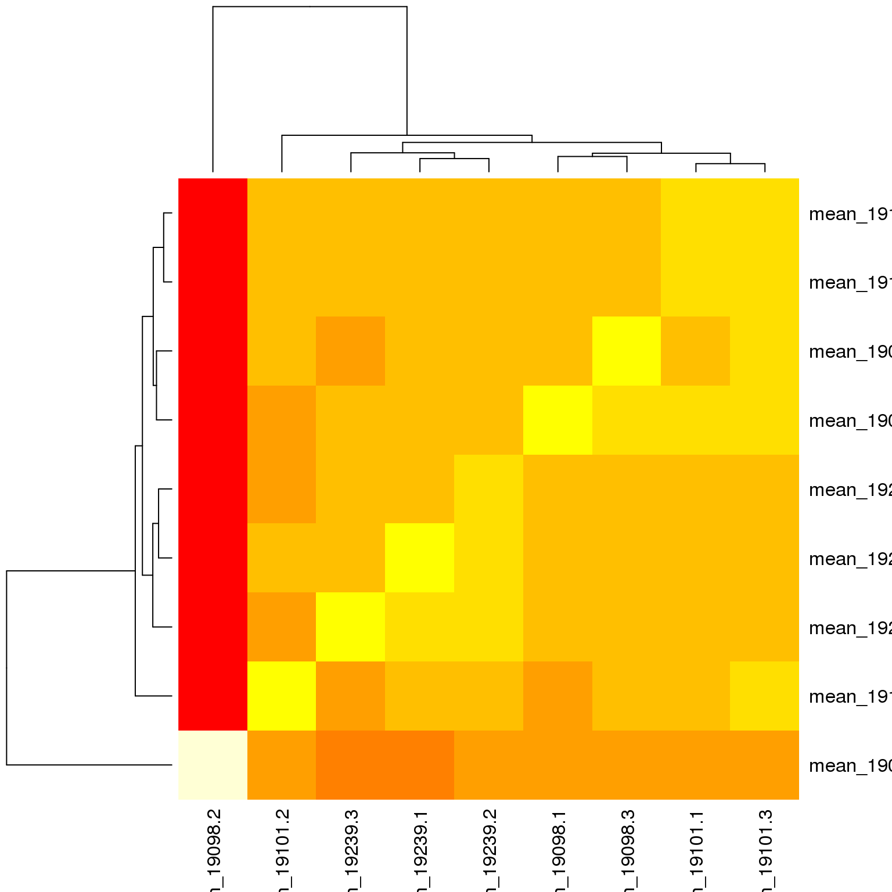
heatmap(cor(table_var[,2:13],use="pairwise.complete.obs"))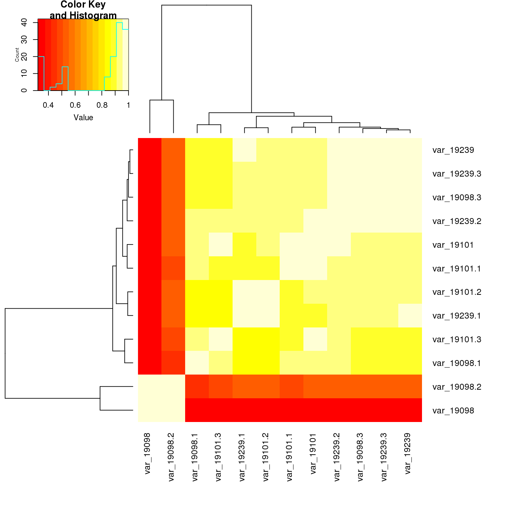
heatmap(cor(table_cv[,2:13],use="pairwise.complete.obs"))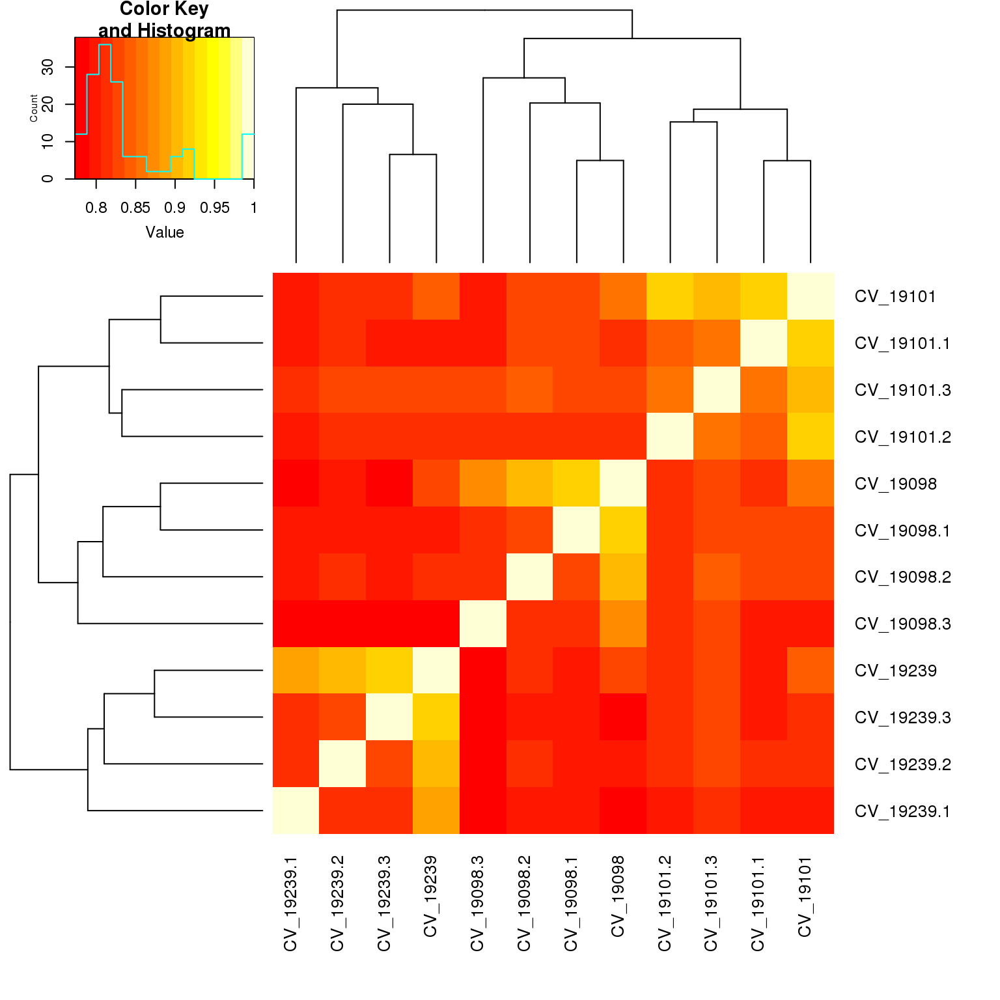
# create a table for boxplot of CV correlation
corr_CV <- cor(table_cv[,2:13],use="pairwise.complete.obs")
corr_boxplot <- data.frame(
cor=c(corr_CV[4,5:6],corr_CV[7,8:9],corr_CV[10,11:12],corr_CV[4:6,7:12],corr_CV[7:9,10:12]),
cor_source=c(rep("within",6),rep("between",27)))
corr_boxplot cor cor_source
1 0.8267383 within
2 0.8050309 within
3 0.8340485 within
4 0.8505097 within
5 0.8156697 within
6 0.8118347 within
7 0.8238322 between
8 0.8247450 between
9 0.7890156 between
10 0.8117253 between
11 0.8180696 between
12 0.8068085 between
13 0.8333849 between
14 0.8350337 between
15 0.8189758 between
16 0.7885392 between
17 0.7918402 between
18 0.7846490 between
19 0.8001410 between
20 0.8053174 between
21 0.7880042 between
22 0.7882794 between
23 0.7941985 between
24 0.7833103 between
25 0.7931791 between
26 0.8024025 between
27 0.8105332 between
28 0.8114995 between
29 0.8122885 between
30 0.8277353 between
31 0.7998317 between
32 0.8121711 between
33 0.8260138 betweenboxplot(cor~cor_source,data=corr_boxplot)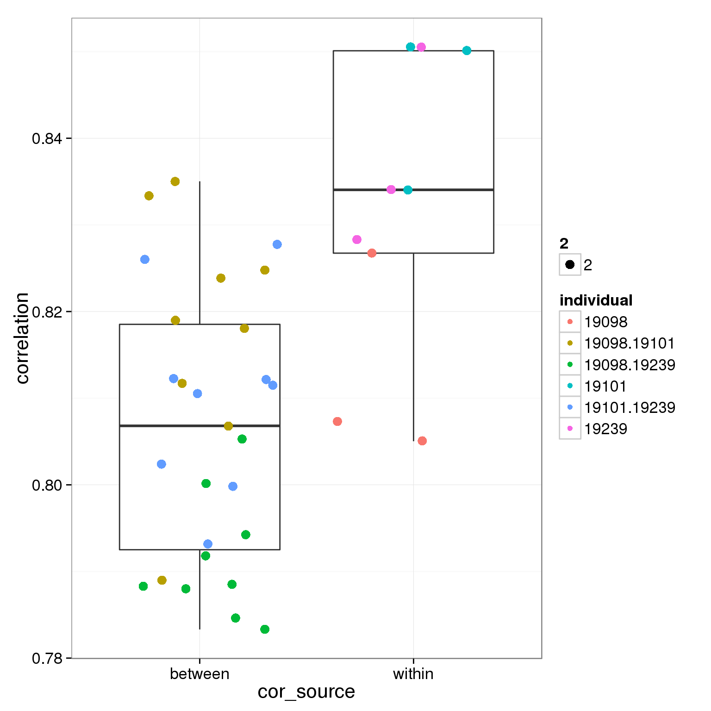
sessionInfo()R version 3.2.0 (2015-04-16)
Platform: x86_64-unknown-linux-gnu (64-bit)
locale:
[1] LC_CTYPE=en_US.UTF-8 LC_NUMERIC=C
[3] LC_TIME=en_US.UTF-8 LC_COLLATE=en_US.UTF-8
[5] LC_MONETARY=en_US.UTF-8 LC_MESSAGES=en_US.UTF-8
[7] LC_PAPER=en_US.UTF-8 LC_NAME=C
[9] LC_ADDRESS=C LC_TELEPHONE=C
[11] LC_MEASUREMENT=en_US.UTF-8 LC_IDENTIFICATION=C
attached base packages:
[1] stats graphics grDevices utils datasets methods base
other attached packages:
[1] edgeR_3.10.2 limma_3.24.9 ggplot2_1.0.1 dplyr_0.4.1 knitr_1.10.5
loaded via a namespace (and not attached):
[1] Rcpp_0.11.6 magrittr_1.5 MASS_7.3-40 munsell_0.4.2
[5] colorspace_1.2-6 stringr_1.0.0 plyr_1.8.2 tools_3.2.0
[9] parallel_3.2.0 grid_3.2.0 gtable_0.1.2 DBI_0.3.1
[13] htmltools_0.2.6 lazyeval_0.1.10 yaml_2.1.13 assertthat_0.1
[17] digest_0.6.8 reshape2_1.4.1 formatR_1.2 evaluate_0.7
[21] rmarkdown_0.6.1 labeling_0.3 stringi_0.4-1 scales_0.2.4
[25] proto_0.3-10